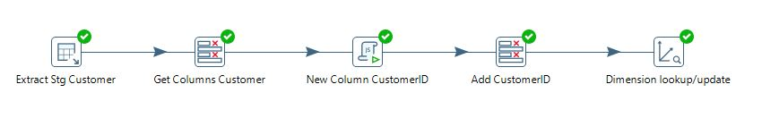
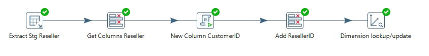
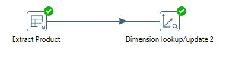
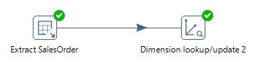
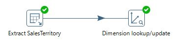
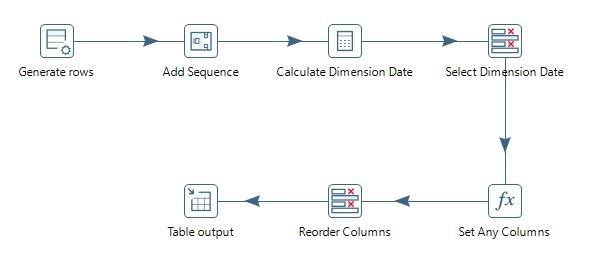

AdventureWorks Sales
- Access the dashboard
- Visit Dashboard
Project Overview
The AdventureWorks Sales Data Dashboard project aims to create a comprehensive data analytics solution using the AdventureWorks database. This involves creating views from the AdventureWorks tables, performing ETL (Extract, Transform, Load) processes with Pentaho, building a new data warehouse, and creating views for visualization.
Background
AdventureWorks is a prominent retailer with extensive sales data spanning multiple channels, including direct sales, internet sales, and reseller sales. However, the company faces challenges in consolidating this data and deriving actionable insights due to the fragmented data infrastructure and limited analytical capabilities.
Business Demand Overview
Increasing Need for Data-Driven Decisions
In today's competitive market, businesses need to leverage data to make informed decisions. For AdventureWorks, understanding sales trends, customer behavior, and product performance is critical for strategic planning and operational efficiency. The demand for real-time insights and advanced analytics capabilities has never been higher.
Challenges in Existing Infrastructure
The current data infrastructure at AdventureWorks is fragmented, leading to data silos and inconsistencies. This fragmentation hinders the ability to perform comprehensive analysis and derive actionable insights. There is a pressing need to integrate and transform this data into a unified and accessible format.
User Stories
-
Sales Manager
Role: Sales Manager
Request: "I need to see a summary of sales performance across all regions and channels."
Objective: To quickly assess overall sales performance and identify any areas that need attention.
Solution: A Sales Summary dashboard that provides a high-level view of total sales, number of transactions, and key performance metrics. -
Marketing Analyst
Role: Marketing Analyst
Request: "I need to analyze customer purchasing behavior to segment our customer base effectively."
Objective: To understand customer behavior patterns and target marketing campaigns more accurately.
Solution: An RFM Analysis tool that segments customers based on recency, frequency, and monetary value of their purchases. -
Operations Manager
Role: Operations Manager
Request: "I need to identify trends and seasonal patterns in our sales data to optimize inventory levels."
Objective: To ensure that inventory levels are aligned with demand to minimize stockouts and overstock situations.
Solution: A Trend Analysis and Sales Calendar/Heatmap that visualize sales trends and seasonal patterns over time. -
Financial Analyst
Role: Financial Analyst
Request: "I need to compare this year's sales performance with previous years to identify growth trends."
Objective: To evaluate year-over-year growth and make financial projections.
Solution: A Year-over-Year (YoY) Analysis dashboard that compares current year sales with previous years. -
Regional Sales Manager
Role: Regional Sales Manager
Request: "I need to see how our sales are distributed geographically to focus our efforts in high-potential areas."
Objective: To identify high and low-performing regions and adjust sales strategies accordingly.
Solution: A Maps visualization that displays sales data by geographic location.
Problem Statement
Challenges
- Data Fragmentation and Inconsistency: Sales data is distributed across multiple tables and formats, complicating data integration.
- Limited Analytical Capabilities: Current tools are inadequate for performing advanced analytics, limiting insight generation.
- Manual Reporting and Lack of Real-Time Insights: Reporting processes are manual, time-consuming, and prone to errors, lacking real-time capabilities.
- Difficulty in Sales Channel Analysis: There is no streamlined way to analyze and compare sales across different channels, hindering optimization efforts.
- Geographical Insights: The company lacks tools to visualize sales data geographically to identify high and low-performing regions.
Objectives
- Integrate and Transform Data: Consolidate and clean sales data for consistency and integrity.
- Build a Data Warehouse: Design and implement a data warehouse that supports advanced analytics and reporting.
- Create Interactive Dashboards: Develop dashboards usingPower BI for key sales metrics and trends visualization.
- Enhance Analytical Capabilities: Implement features such as trend analysis, year-over-year comparisons, and customer segmentation (RFM analysis).
- Automate Reporting: Automate reporting processes to provide real-time insights and reduce manual efforts.
Technology Used
- Sales Data: Historical records of sales transactions, including the amount each product was sold, dates, and quantity sold.
- Customer Data: Demographic information about customers, including names, locations, and customer ID numbers.
- Product Data: Detailed information about the product catalog, including product categories, names, sub-categories, and product costs.
- Sales Territory Data: Information about different locations where sales were recorded.
- Sales Order Data: Detailed information about each order, including order ID and sales channel.
- Reseller Data: Demographic information about resellers, including names, locations, and resellers’ ID numbers.
Data Sourcing
This analysis is rooted in the AdventureWorks dataset, a comprehensive and invaluable source of information. This dataset encompasses various facets of the company’s operations and includes:
- Sales Data: Historical records of sales transactions, including the amount each product was sold, dates, and quantity sold.
- Customer Data: Demographic information about customers, including names, locations, and customer ID numbers.
- Product Data: Detailed information about the product catalog, including product categories, names, sub-categories, and product costs.
- Sales Territory Data: Information about different locations where sales were recorded.
- Sales Order Data: Detailed information about each order, including order ID and sales channel.
- Reseller Data: Demographic information about resellers, including names, locations, and resellers’ ID numbers.
Implementation
1. Creating Staging Views in AdventureWorks Database
Identify Relevant Tables: Key tables include :
CustomerResellerProductSales OrderInternet SalesSales TerritoryDate
Create Stagging Views Customer:
CREATE VIEW [dbo].[Stg_View_Customer]
AS
SELECT
c.[CustomerKey],
CONCAT(c.[FirstName], ' ', COALESCE(c.[MiddleName] + ' ', ''), c.[LastName]) AS Customer,
g.[City],
g.[StateProvinceName] AS StateProvince,
g.[EnglishCountryRegionName] AS CountryRegion,
g.[PostalCode] AS PostalCode
FROM
[dbo].[DimCustomer] c
LEFT OUTER JOIN
[dbo].[DimGeography] g ON c.[GeographyKey] = g.[GeographyKey]
Create Stagging Views Reseller:
CREATE VIEW [dbo].[Stg_View_Reseller]
AS
SELECT
r.[ResellerKey],
r.[BusinessType],
r.[ResellerName],
g.[City],
g.[StateProvinceName] AS StateProvince,
g.[EnglishCountryRegionName] AS CountryRegion,
g.[PostalCode] AS PostalCode
FROM
[dbo].[DimReseller] r
LEFT OUTER JOIN
[dbo].[DimGeography] g ON r.[GeographyKey] = g.[GeographyKey]
Create Stagging Views Product:
CREATE VIEW [dbo].[Stg_View_Product]
AS
SELECT
p.[ProductKey],
p.[ProductAlternateKey] AS SKU,
p.[EnglishProductName] AS Product,
p.[StandardCost],
p.[Color],
p.[ListPrice],
s.[EnglishProductSubcategoryName] AS [ProductSubcategoryCode],
c.[EnglishProductCategoryName] AS [ProductCategory],
p.ModelName AS [ProductModel]
FROM
[dbo].[DimProduct] p
INNER JOIN
[dbo].[DimProductSubcategory] s ON p.[ProductSubcategoryKey] = s.[ProductSubcategoryKey]
INNER JOIN
[dbo].[DimProductCategory] c ON s.[ProductCategoryKey] = c.[ProductCategoryKey]
Create Stagging Views Sales Territory:
CREATE VIEW [dbo].[Stg_View_SalesTerritory]
AS
SELECT
t.[SalesTerritoryKey],
t.[SalesTerritoryRegion] AS Region,
t.[SalesTerritoryCountry] AS Country,
t.[SalesTerritoryGroup] AS [Group]
FROM
[dbo].[DimSalesTerritory] t
Create Stagging Views Sales Order:
CREATE VIEW [dbo].[Stg_View_SalesOrder]
AS
SELECT
'Internet' AS Channel,
CONCAT(
RIGHT(fs.[SalesOrderNumber], LEN(fs.[SalesOrderNumber]) - 2),
RIGHT('000' + CAST(ROW_NUMBER() OVER(PARTITION BY fs.[SalesOrderNumber] ORDER BY fs.[SalesOrderLineNumber]) AS VARCHAR(3)), 3)
) AS SalesOrderLineKey,
fs.[SalesOrderNumber],
CONCAT(fs.[SalesOrderNumber], '-', fs.[SalesOrderLineNumber]) AS SalesOrderLine
FROM
[dbo].[FactInternetSales] fs
UNION ALL
SELECT
'Reseller' AS Channel,
CONCAT(
RIGHT(fr.[SalesOrderNumber], LEN(fr.[SalesOrderNumber]) - 2),
RIGHT('000' + CAST(ROW_NUMBER() OVER(PARTITION BY fr.[SalesOrderNumber] ORDER BY fr.[SalesOrderLineNumber]) AS VARCHAR(3)), 3)
) AS SalesOrderLineKey,
fr.[SalesOrderNumber],
CONCAT(fr.[SalesOrderNumber], '-', fr.[SalesOrderLineNumber]) AS SalesOrderLine
FROM
[dbo].[FactResellerSales] fr
Create Stagging Views Internet Sales:
CREATE VIEW [dbo].[Stg_View_InternetSales]
AS
SELECT
CONCAT(
RIGHT(fs.[SalesOrderNumber], LEN(fs.[SalesOrderNumber]) - 2),
RIGHT('000' + CAST(ROW_NUMBER() OVER(PARTITION BY fs.[SalesOrderNumber] ORDER BY fs.[SalesOrderLineNumber]) AS VARCHAR(3)), 3)
) AS SalesOrderLineKey,
-1 AS ResellerKey,
fs.[CustomerKey],
fs.[ProductKey],
fs.[SalesTerritoryKey],
fs.[OrderQuantity],
fs.[UnitPrice],
fs.[ExtendedAmount],
fs.[UnitPriceDiscountPct],
fs.[ProductStandardCost],
fs.[TotalProductCost],
fs.[SalesAmount]
FROM
[dbo].[FactInternetSales] fs
UNION ALL
SELECT
CONCAT(
RIGHT(fr.[SalesOrderNumber], LEN(fr.[SalesOrderNumber]) - 2),
RIGHT('000' + CAST(ROW_NUMBER() OVER(PARTITION BY fr.[SalesOrderNumber] ORDER BY fr.[SalesOrderLineNumber]) AS VARCHAR(3)), 3)
) AS SalesOrderLineKey,
fr.[ResellerKey],
-1 AS CustomerKey,
fr.[ProductKey],
fr.[SalesTerritoryKey],
fr.[OrderQuantity],
fr.[UnitPrice],
fr.[ExtendedAmount],
fr.[UnitPriceDiscountPct],
fr.[ProductStandardCost],
fr.[TotalProductCost],
fr.[SalesAmount]
FROM
[dbo].[FactResellerSales] fr
Create Stagging Views Sales:
CREATE VIEW [dbo].[Stg_View_Sales]
AS
SELECT
is.*,
df.[OrderDateKey],
df.[DueDateKey],
df.[ShipDateKey]
FROM
[dbo].[Stg_View_InternetSales] is
JOIN
[dbo].[DateReferences] df ON is.[SalesOrderLineKey] = df.[SalesOrderLineKey]
Here is a link to the create all stagging view
2. Building the Data Warehouse
- Dimensional Modeling: Design a star schema with fact and dimension tables.
- Fact Table:
Sales
- Dimension Table:
CustomerResellerProductSales OrderSales TerritoryDate
Here is a link to the create datawarehouse
3. Data Extraction, Transformation, and Loading (ETL) with Pentaho
- Extraction: Read data from AdventureWorks views using Pentaho.
- Transformation: Perform data cleaning, aggregation, and transformation.
- Load: Load transformed data into the new data warehouse.
This process represents the ETL workflow for this project, starting with extracting data from staging views created for each table. Transformations include creating IDs for entities like customers and resellers and generating a date dimension table. Below is an illustration of the ETL process:





Here is a link to the etl process pentaho
4. Dashboard Creation
- Tools: Use Power BI for dashboard development.
- Key Metrics: Sales total, sales profit, sales profit margin, sales volume, sales trends, internet sales, reseller sales, performing products, and customer demographics.
- Visualizations: scatter plots, KPI (Key Performance Indicator), tree maps, decompositionand additional chart from deneb.
Dashboard Menus and Sub-Menus
Sales Menu
- Sales Summary: Total sales, number of transactions, and key performance metrics.
- Sales Calendar/Sales Heatmap: Sales by calendar, using heatmap to show daily, weekly, or monthly sales patterns.
- Trend Analysis: Trend analysis of sales over time.
- YoY Analysis (Year-over-Year): Compare current year's sales with previous years.
Product Menu
- Pareto Analysis: Identify products contributing most to total sales.
- Correlation: Analyze correlation between products and other factors influencing sales.
- Remove Week Off: Align dataset with the calendar for accurate workday representation.
Internet Menu
- RFM Analysis: Analyze customer behavior based on recency, frequency, and monetary value of purchases.
- Decomposition: Decomposition analysis to understand the contribution of factors such as seasonality, trends, and noise.
- Maps: Sales based on geographic location.
- Customer Inquiry: Query customer data based on specific criteria.
Reseller Menu
- P/L Analysis (Profit and Loss Analysis): Analyze profit and loss from reseller sales.
- Maps: Reseller sales based on geographic location.
- Reseller Inquiry: Query reseller data based on specific criteria.
Results
- Sales Insights: Identified key trends and patterns in sales data.
- Performance Metrics: Monitored sales performance and identified top-performing products and regions.
- Interactive Dashboards: Developed user-friendly dashboards for stakeholders to make informed decisions.
Conclusion
The AdventureWorks Sales Data Dashboard project has successfully addressed the challenges posed by fragmented data sources and limited analytical capabilities. By creating a unified data warehouse and implementing robust ETL processes, the project enables AdventureWorks to perform advanced analytics and generate actionable insights.
Key achievements include:
- Improved data integration and consistency through the consolidation of sales data from multiple sources.
- Enhanced analytical capabilities with tools for trend analysis, customer segmentation, and geographical visualization.
- Automation of reporting processes, providing real-time insights into sales performance across different channels and regions.
- Empowered decision-making through intuitive dashboards that facilitate easy access to critical business metrics.
Looking ahead, continuous refinement and expansion of the data analytics infrastructure will be crucial to maintaining competitiveness in the dynamic retail market. By leveraging data-driven insights, AdventureWorks can adapt swiftly to market changes, optimize operational efficiencies, and drive sustainable growth.